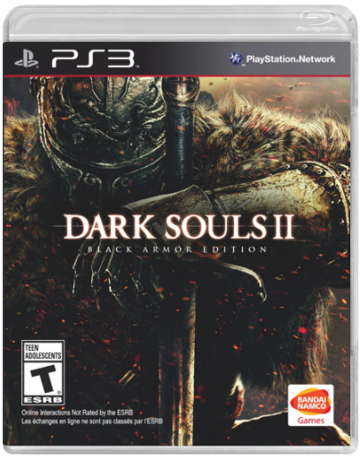

Dark Souls II - Black Armour EditionNamco Bandai  Pre-Order Offer: Pre-Order now and get Dark Souls II: Black Armour Edition for the same price as the standard edition. Includes: Free Collectible Metal Case, Standard Game and Game Soundtrack.  Ni No Kuni - Wrath of the White WitchNamco Bandai Ni No Kuni - Wrath of the White WitchNamco Bandai Join the intimate and heart-warming tale of a young boy named Oliver, and his journey to a strange world to learn magic and bring his mother back from the dead.  NFL Blitz 2000Midway Games Ltd NFL Blitz 2000Midway Games Ltd "No refs. No rules," boasts NFL Blitz 2000, making it clear that this game is not true-to-life football simulation. The game disregards strict realism in favour of outrageous moves, bone-crushing tackles, and jaw-dropping plays. And you'll need those big plays: a first down in NFL Blitz 2000 is 30 yards, and there aren't any rules against pass interference.  Metal Gear Solid V: Ground ZeroesKonami Digital Entertainment BV Metal Gear Solid V: Ground ZeroesKonami Digital Entertainment BV Konami - METAL GEAR SOLID V: GROUND ZEROS  Shin Megami Tensei: Devil Survivor OverclockedGhostlight Shin Megami Tensei: Devil Survivor OverclockedGhostlight Expanded and enhanced, SMT: Devil Survivor Overclocked for Nintendo 3DS builds upon what many considered one of the best RPGs of 2009. The player is presented with a novel premise: Tokyo is in full lockdown, the government's swift, coldblooded response to a surprise demon invasion. While you and your friends must solve the nature of the interdimensional rift through which the horrific creatures are entering your world, saving the world is not your highest priority; staying alive, on the other hand, is.  Resident EvilCapcom Resident EvilCapcom Turn out the lights. Lock the doors....Live the Nightmare. The award-winning survival horror series debuts on Nintendo GameCube system! Raccoon City. A secluded mountain community, plagued by a storm of vicious attacks, is completely overrun. Mutant beasts, blood-thirsty zombies infest the landscape. You are S.T.A.R.S - Special Tactics and Rescue Service. Your mission: investigate the ominous mansion at the core of the horrific disaster. Uncover secrets behind a radical, genetic research facility. With unspeakable horrors lurking around every corner, the ultimate test may be just to make it out alive! The most terrifying, realistic video game ever created. An entirely new gameplay experience spanning 2 discs! Solve hair-raising mysteries and uncover spine-chilling new secrets. Play as S.T.A.R.S. operative Jill Valentine or Chris Redfield. Face sheer terror as you encounter faster enemies and master devastating weapons. Tread unexplored areas: new estate rooms, secret lairs, graveyards, guest houses and more.  Resident Evil 5: Gold EditionCapcom Resident Evil 5: Gold EditionCapcom Great Games and Accessories for the Playstation 3 (PS3) from Gamesbuyer. |


 Made with Delicious Library
Made with Delicious LibraryFlinders, NSW zipflap congrotus delicious library Powell, Rhys